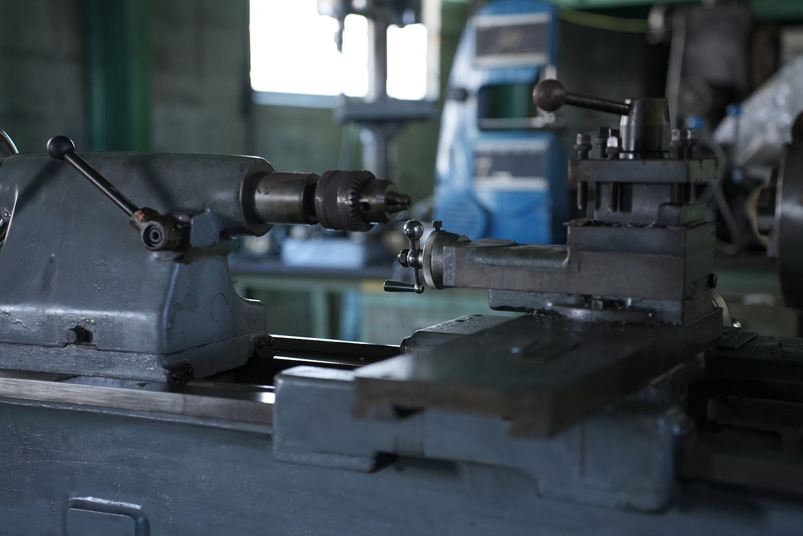
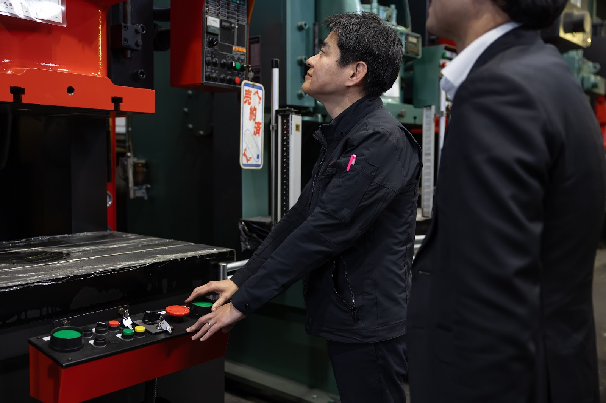
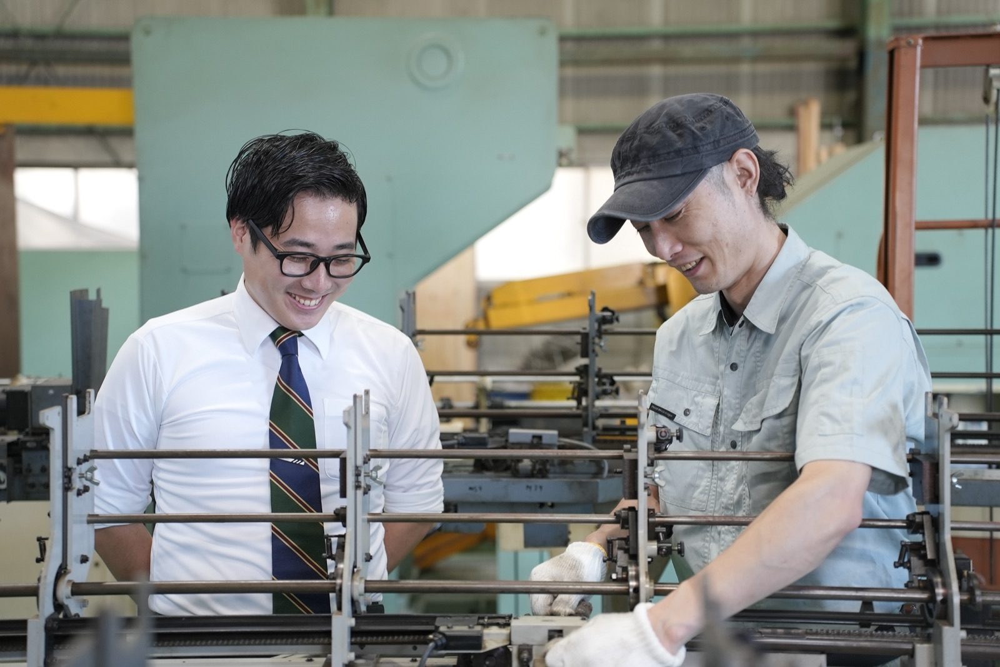
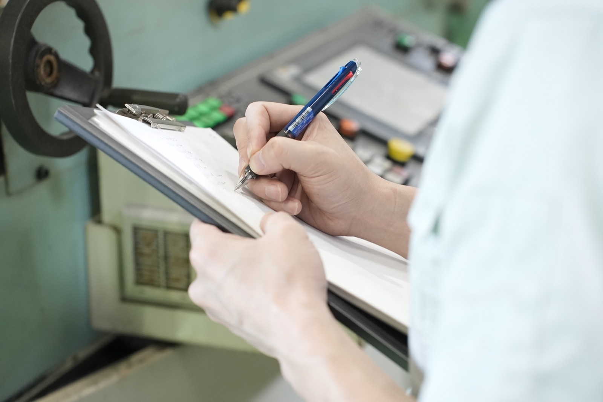
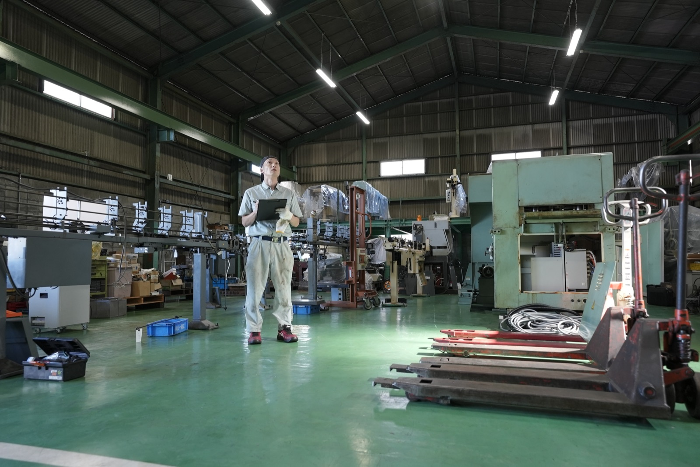
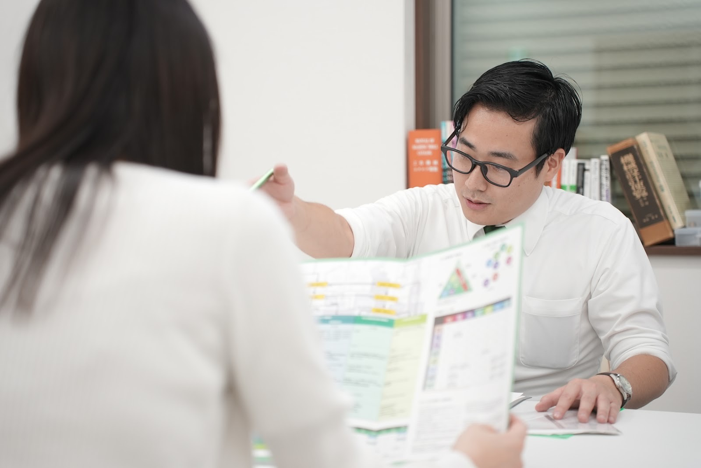

FOR YOU今の経験をもっと広い技術へ。
修理だけで終わらない技術者へ
工作機械の修理や設備保全の経験を生かし、オーバーホールや据付、ロボットの導入まで任せていきます。
商品を案内するだけではない営業へ
機械の販売だけでなく、修理や中古設備、自動化、補助金活用まで、お客様に合わせて組み合わせを考えられます。
未経験から手に職をつけたい方へ
機械やものづくりに興味があり現場から学ぶ意欲があれば、工具の使い方や機械の構造から身につけられます。
WHY NOWAI時代に現場でしか磨けない力を。
AIやデジタル技術が進んでも、機械の音や動きから不調の原因を探り、実際に手を動かして直す仕事は、画面の中だけでは完結しません。
さらに、今ある工作機械とロボットをつなぐ自動化には、機械の仕組みと現場の両方を知っている人が必要です。
機械を診る。現場で直す。自動化を考える。
音を聞き分け、原因を探り、手を動かして直す。そうした力は、現場に出続けた人にしか身につきません。
MESSAGE決められた作業ではなく
その場で直し方を決める。
工作機械のトラブルにいつも同じ正解があるわけではありません。
機械の状態、使用年数、生産への影響、ご予算によって、修理するのか、オーバーホールするのか、買い替えるのかは変わります。
だから現場に足を運び、自分の目で確かめてから、どう直すかを決めます。
止まっていた機械が再び動く。
古い設備が本来の精度を取り戻す。
人が行っていた作業をロボットが担う。
自分の仕事によって目の前の工場が変わる。
その手応えを直接感じられる仕事です。
シマモト技研は今、事業と体制を広げている途中です。
決まった仕事をこなすだけでなく、新しい仕事のやり方を一緒につくっていける方を求めています。
FEATUREシマモト技研で働く魅力

古い機械からロボットまで
新旧の技術を横断して学べる
メーカーサポートが終了した旧型機の修理・オーバーホールから産業用ロボットや省力化システムまで携わります。
古い機械を直す技術と、新しい自動化を入れる技術の両方が身につきます。

お客様から直接頼られる
自分の仕事が生産再開につながる
故障した機械を復旧しお客様の生産ラインが再び動き出す。
自分の技術が現場を支えていることを目の前で実感できます。

機械を見て、方法を考える力が身につく
現場に合う方法を考える
新品、中古、修理、オーバーホール、自動化、補助金活用。
その現場に合うやり方を、組み合わせながら考える力が身につきます。

会社をつくる側に立てる
成長段階の組織だからできる経験
シマモト技研は今、会社のやり方を少しずつ作っている最中です。
決まった仕事をこなすだけでなく、仕事の進め方やサービスづくりにも関わっていけます。
WORKS募集する仕事

SERVICE ENGINEER
サービスエンジニア
機械の復旧からその先の自動化まで。
工作機械の点検、修理、メンテナンス、オーバーホール、搬入・据付などを担当します。
現場で設備の状態を確認し原因を調査。部品交換や精度調整を行い機械の復旧へつなげます。
経験を積んだ後はロボットシステムの立ち上げやティーチング、自動化設備の保守にも携わります。
主な仕事内容
- 工作機械の点検・メンテナンス
- 突発故障への現地対応
- 部品交換・機械調整
- 精度測定・精度調整
- オーバーホール
- 搬入・据付・立ち上げ
- ロボット・自動化設備の導入支援
- 導入後のアフターサポート
この仕事のやりがい
止まっていた機械が再び動き生産が再開する。
自分の判断と技術によってお客様の現場を直接支えられる仕事です。

SALES
提案営業
新品も中古も、修理もロボットも扱う営業です。
お客様の工場を訪問し、設備の状態や困りごとを確認します。
新しい工作機械だけでなく、中古機械、修理、オーバーホール、ロボットによる自動化、補助金活用まで、お客様に合わせて組み合わせます。
社内の技術者やゼロプラスと連携し設備導入後までお客様を支える営業です。
主な仕事内容
- 既存顧客への訪問・フォロー
- 設備の状況や困りごとのヒアリング
- 工作機械・周辺機器のご案内
- 修理・オーバーホールのご案内
- ロボット・自動化システムの導入支援
- 見積り・導入スケジュールの調整
- 補助金活用に関する連携
- 導入後のアフターフォロー
この仕事のやりがい
一つの商品を売るのではなく、技術や予算、今後の設備計画まで含めて、お客様と一緒に決めていきます。
SKILLS身につく4つの力。
機械を診る力
音、振動、精度、動作から、設備の状態や不具合の原因を見極めます。
現場で直す力
部品交換、調整、修理、オーバーホールを通じて、設備を復旧へ導きます。
自動化を考える力
工作機械とロボット、周辺機器を組み合わせ現場に合う省力化を考えます。
現場に合う方法を考える力
機械の状態や予算、使い方を見ながら、その現場に合う方法を考えます。
EDUCATION経験に合わせて成長できる環境。
現場で学ぶOJT
先輩社員と現場へ同行し工具の使い方、機械の構造、点検方法、顧客対応を実務の中で学びます。
メーカーの勉強会
工作機械やロボットメーカーの勉強会を通じて製品知識や保守技術の基礎を身につけます。
経験者は得意分野から
設備保全、機械組立、電気制御、生産技術、営業など、これまでの経験を生かせる仕事から担当領域を広げます。
将来のキャリア
- 工作機械を究めるサービスエンジニア
- ロボット・自動化を担う技術者
- 技術知識を生かす提案営業
- チームや事業を動かすマネジメント職
VALUES私たちが大切にしていること
現場主義
現場に足を運び、現場から学び、困ったときにはすぐに動く。
誠実に泥臭く
目の前の困りごとから逃げず、できる方法を粘り強く探す。
その現場に合う方法を考える
知識と経験をもとに、その現場に合うやり方を考える。
導入後まで責任を持つ
設備を納入して終わりにせず保守やオーバーホールまで長く向き合う。
PERSONこんな方と働きたい。
工作機械、産業機械、設備保全、生産技術、機械組立、電気制御、機械・設備営業などの経験をお持ちの方は、その知識を生かせます。
直接の経験がなくても、機械への興味と成長する意欲を持つ方を歓迎します。
- 機械やものづくりが好きな方
- 現場に足を運び自分の目で確かめられる方
- 分からないことを学び続けられる方
- お客様の困りごとに誠実に向き合える方
- 決められた方法だけでなく自分で考えられる方
- 新しい技術や変化を前向きに楽しめる方
FLOW選考の流れ
STEP 01
エントリー
応募フォームまたは採用媒体からご応募ください。
仕事内容について詳しく聞いてから検討したい方のご相談も受け付けます。
STEP 02
ご連絡・書類確認
担当者から今後の選考についてご連絡します。
STEP 03
面談・会社説明
仕事内容や会社の方向性をご説明します。
これまでの経験や今後身につけたい技術についてもお聞かせください。
STEP 04
選考・内定
選考結果をご連絡し入社時期などをご相談します。